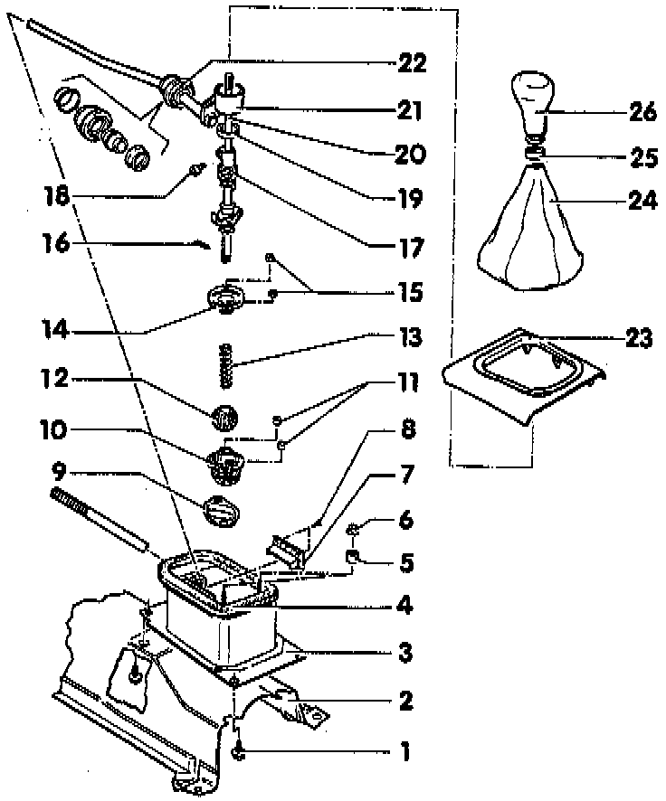
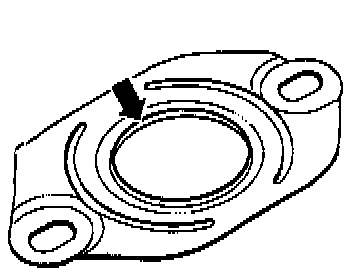
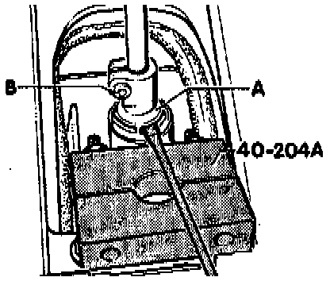
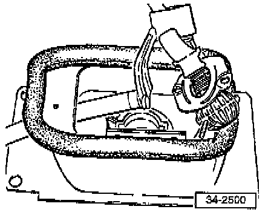
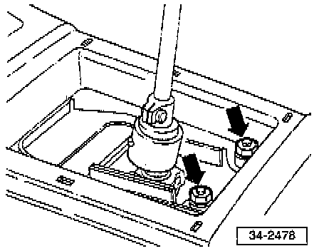
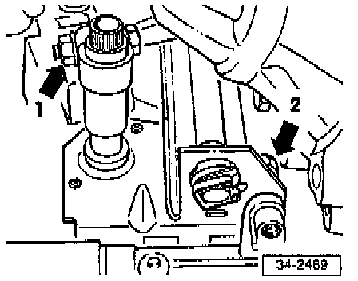
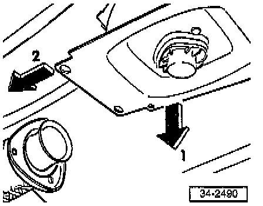

Gearshift Housing/Shift Linkage
NOTE:^ Removing and installing shift lever, refer below.
^ Observe general repair instructions, refer to Repair Group 00.
^ Lubricate all joints and friction surfaces with MoS2 grease, Part No. G 000 602.
COMPONENT NOTES AND INFORMATION

1 Attachment bolt, gearshift housing to body
- Tighten to: 20 Nm (15 ft lb)
2 Heat shield
3 Gearshift housing
4 Gasket
- Bond to gearshift housing
5 Spacer
- Between center console and gearshift housing
6 Nut
- For center console
7 Travel stop
8 Rivet
- For attachment of travel stop
9 Gasket
- For ball housing
10 Ball housing
11 Spacer
12 Ball
13 Spring
14 Retainer plate
- Installation position, refer to Fig. 1, below.
15 Self-locking nuts
- Tighten to: 10 Nm (7 ft lb)
16 Spring pin
17 Eccentric adjuster
- After installing shift lever, snap into place on shift lever
- Removing, refer to Fig. 2, below
18 Clamping bolt
- Tighten to: 2 Nm (18 inch lb)
19 Plastic ring
- Attach to eccentric adjuster
20 Shift lever
- Remove eccentric adjuster before removing, refer to Fig. 2, below
- Assemble before installation
Slide on retainer plate -4-, spring -13- and ball -12- and secure with spring pin -16-
21 Selector rod
- Extract from gearshift housing along with shift lever, refer to Fig. 3, below.
22 Selector rod support
- When installing make sure that the two spherical halves do not separate
23 Cover plate
24 Shift boot
- Removing, refer below.
- Installation, refer to "Shift Lever and Shift Lever Boot". Shift Lever and Shift Lever Boot
25 Rubber ring
- Vehicles with leatherette boot only
26 Shift knob

Fig. 1 Installation position of retainer plate
- The shoulder on the periphery -arrow- is located opposite the ball

Fig. 2 Removing eccentric adjuster
- Loosen bolt -B- and carefully pry eccentric adjuster-A- from lower section with screwdriver.

Fig. 3 Extracting selector rod with shift lever from gearshift housing
REMOVAL
- Unscrew shift knob from shift lever and remove along with boot.

- Remove nuts attaching gearshift housing to center console -arrows-.
- Remove Three Way Catalytic Converter (TWC), refer to Exhaust System
- Remove shield at front, push toward the rear, then pull out toward front.

- Remove clamp for selector rod/selector lever at front -arrow 1-, and remove front bolt -arrow 2- attaching bracket to steering gear.

- Remove bracket from steering gear -arrows-.
- Remove gearshift housing from body.
- Press transmission housing toward rear, press up on selector rod with bracket and selector lever inch engine compartment.
- Remove and selector lever from selector rod.

- Swivel down transmission housing with selector rod, -arrow 1- while pressing toward engine -arrow 2- and remove.
INSTALLATION
- Install inch reverse order of removal.
- Tighten as shown in Component Notes And Information above.
- Adjust shift linkage. Adjustments
- Installing shift lever boot refer to "Shift Lever and Shift Lever Boot". Shift Lever and Shift Lever Boot